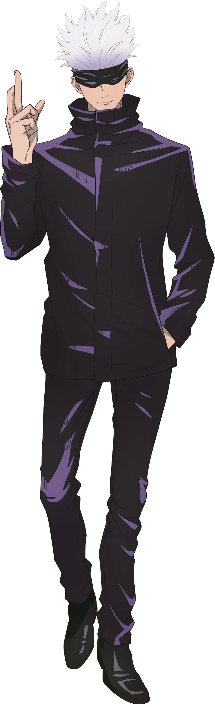
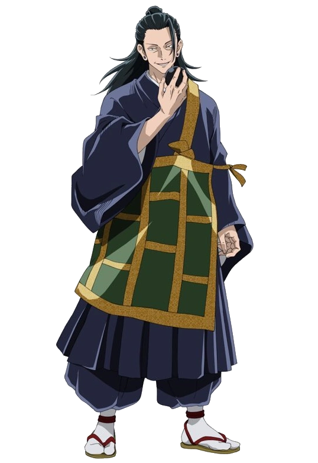
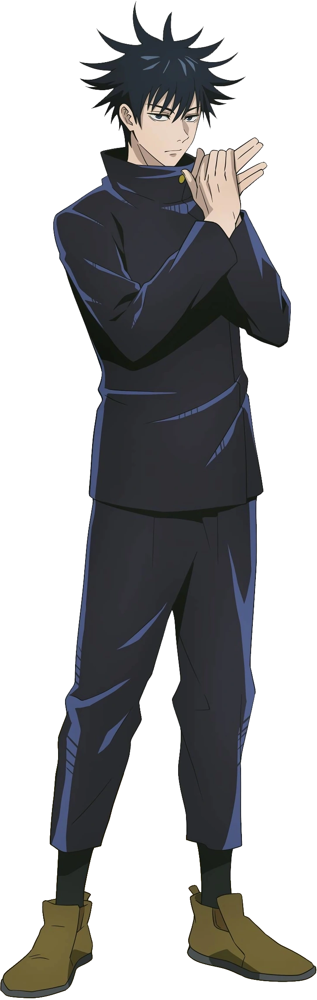

Main Characters
Gojo Satoru
Satoru Gojo is one of the main protagonists of the Jujutsu Kaisen series. He is a special grade jujutsu sorcerer and widely recognized as the strongest in the world. Satoru is the pride of the Gojo Clan, the first person to inherit both the Limitless and the Six Eyes in four hundred years. He works as a teacher at the Tokyo Jujutsu High and uses his influence to protect and train strong young allies.Also my favourite character in the whole jujutsu-kaisen series.
Ryomen Sukuna

Ryomen Sukuna, more often referred to as simply Sukuna , is the strongest jujutsu sorcerer from over a thousand years ago. Regarded as the undisputed King of Curses, Sukuna is one of the primary antagonists of the Jujutsu Kaisen series.
Geto Suguru
Suguru Geto is an antagonist in both the Jujutsu Kaisen series and its prequel Jujutsu Kaisen 0: Jujutsu High. He was originally a student of Masamichi Yaga's alongside Satoru Gojo and Shoko Ieiri at Tokyo Jujutsu High. His experiences as a jujutsu sorcerer bred a deep hatred for non-sorcerers, leading to an incident where Suguru massacred over a hundred civilians in a single night. He was expelled from Jujutsu High and came to be known as the worst of all curse users.
Yuji Itadori

Yuji Itadori is the main protagonist of the Jujutsu Kaisen series. He is the son of Jin Itadori and Kaori Itadori, and the grandson of Wasuke Itadori. Yuji was living a normal life in Sendai City until he encountered Megumi and ate one of Sukuna's fingers. After becoming Sukuna's vessel, Yuji began attending Tokyo Jujutsu High alongside Megumi and Nobara as first-year students.He is the host of Sukuna.
Megumi Fushiguro
Megumi Fushiguro is the deuteragonist of the Jujutsu Kaisen series. He is a grade 2 jujutsu sorcerer and first-year student at Tokyo Jujutsu High alongside Yuji Itadori and Nobara Kugisaki. Megumi is the step-brother of Tsumiki Fushiguro and as the son of Toji Fushiguro, Megumi is also a descendant of the Zenin Clan. Megumi was born outside the clan as Toji's trump card and was eventually found by Satoru Gojo, who mentored him and enrolled him at Jujutsu High as his student, user of Ten Shadows Technique.
Toji Fushiguro

Toji Fushiguro , born Toji Zenin is a recurring character in the Jujutsu Kaisen series. He was a former member of the Zenin clan and the infamous assassin known as the Sorcerer Killer, contracted by the Time Vessel Association among other groups throughout his time as a non-curse user. He was also the father of Megumi Fushiguro and former enemy of Satoru Gojo. While working for the Star Religious Group, Toji serves as the primary antagonist of the Gojo's Past Arc.